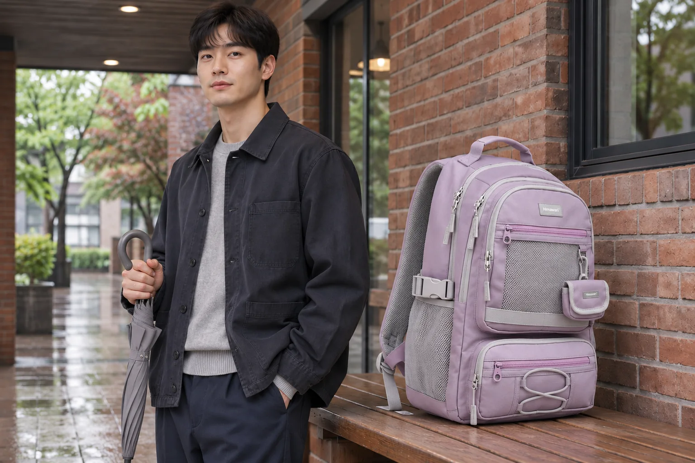
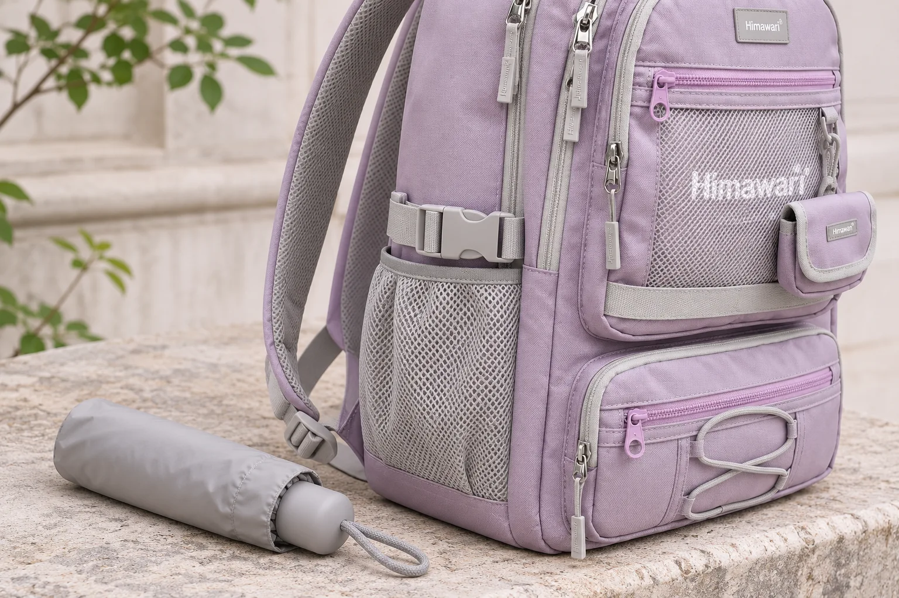

메쉬 옆 포켓이면 젖은 우산을 바로 넣어도 될까

비를 피해 건물 입구에 들어오면 접은 우산을 어디에 둘지 잠깐 망설이게 됩니다. 백팩 옆에 그물 모양 포켓이 보이면 물이 빠질 것 같아 손이 가기도 합니다. 하지만 메쉬가 보인다는 관찰만으로 젖은 우산을 넣었을 때의 배수나 안쪽 짐의 상태를 알 수는 없습니다. 우산에 남은 물기와 포켓에서 실제로 맞닿을 면을 함께 살펴야 합니다.
No.9291 라벤더의 실제 제품 사진에는 회색 메쉬 옆 포켓과 그 위쪽의 가로 끈·버클이 보입니다. 앞의 메쉬 지퍼 포켓과 달리 옆은 위에서 넣고 빼는 형태입니다. 외부 크기는 가로 31 × 세로 45 × 폭 15cm로 안내되지만 옆 포켓의 내부 길이나 배수 성능은 이 수치로 확인되지 않습니다. 이 글에서는 우산을 실제로 넣어 재거나 물을 부어 시험하지 않았습니다.
비를 피한 입구에서, 우산을 가방과 떨어뜨려 둡니다
우산을 접는 순간에는 가방 안의 물건을 꺼내는 동작까지 한꺼번에 할 필요가 없습니다. 주변 사람에게 물이 튀지 않는 곳에서 우산을 다루고 가방은 우산과 떨어진 자리에 받칠 수 있습니다. 가방을 멘 채 몸 뒤의 옆 포켓에 바로 밀어 넣으려 하면 포켓 입구와 우산 끝이 어디에 닿는지 보기가 어렵습니다. 잠시 멈춰 우산과 가방을 눈앞에 두면 배치를 확인하기 좋습니다.
그물 밖으로 빠져나갈 물이 있다면 그 물이 최종적으로 어디에 닿는지도 생각해야 합니다. 포켓 아래가 내 옷이나 의자에 닿는 위치일 수 있습니다. 반대로 포켓 안쪽에서 가방 본체와 맞닿는 면은 원본 사진의 바깥 메쉬와 같은 조건인지 확인되지 않았습니다. 구멍이 보이는 한쪽 면만 보고 우산 전체의 물기가 가방 밖으로 곧장 빠져나간다고 정하지 않습니다.
우산의 물기를 정리하는 방법은 우산 안내와 건물의 이용 방식에 맞춥니다. 가방의 원단에 닦아 내거나 주머니 바닥에 우산 끝을 여러 번 눌러 물기를 빼는 방식으로 해결하지 않습니다. 어느 물건을 젖은 상태로 옮기려는지 분명히 하면 마른 가방에 임시 처리를 맡기지 않고 운반 방법을 따로 고를 수 있습니다. 입구에서 나눠 둔 두 물건을 곧바로 다시 합칠 이유는 없습니다.
다시 이동할 때, 우산 덮개까지 포함해 길이를 봅니다
우산을 별도 덮개나 케이스에 넣어 옮길 계획이라면 덮개를 씌운 전체 모습으로 포켓과 비교합니다. 접은 우산만의 길이가 맞아도 덮개의 여밈이나 손잡이가 밖으로 남는 모습은 달라질 수 있습니다. 우산 끝에서 손잡이까지 어느 부분이 포켓 안에 들어갈지, 밖에 남은 부분을 어느 방향에서 잡을지 나누어 봅니다. 본체 높이 45cm를 기준으로 포켓 깊이를 비례 계산하지는 않습니다.
옆의 버클은 가까이 보이는 별도 부품입니다. 우산을 묶는 용도나 특정 지름을 고정하는 기능은 실제 안내에서 확인해야 합니다. 버클이 있다는 이유로 위로 남는 우산 손잡이가 흔들리지 않을 것이라고 기대하거나 끈을 강하게 조여 확인하지 않습니다. 가로 끈이 우산을 꺼낼 방향을 가로막는다면 손으로 빼는 동작에 무엇이 추가되는지부터 봅니다. 포켓에 넣을 수 있는지와 반복해서 꺼내기 쉬운지는 다를 수 있습니다.
별도 덮개도 이름만으로 완전한 물 차단을 보장하지 않습니다. 젖은 우산을 어떤 방향으로 넣고 어디까지 닫는지 해당 소품의 안내를 읽습니다. 덮개 바깥에도 물기가 남아 있다면 마른 가방과 닿는 상태는 다시 확인해야 합니다. 이 글의 연출 사진에서는 덮개를 씌운 우산을 포켓 바깥에 따로 놓았습니다. No.9291에 맞는 크기나 덮개의 방수 성능을 검증한 자료는 아닙니다.

실내에서 앉을 때, 우산이 닿을 자리가 바뀝니다
걸을 때 가방의 옆이던 부분은 의자에 놓으면 옆자리나 등받이 쪽으로 향할 수 있습니다. 옆 포켓에 긴 물건이 들어 있는 상태라면 그 끝이 가방보다 먼저 의자에 닿는지도 봅니다. 손잡이가 밖으로 남았다는 이유만으로 바로 문제가 생긴다고 단정할 필요는 없지만 가방만 보며 내려놓으면 우산이 지나갈 자리를 놓치기 쉽습니다. 내려놓는 방향과 우산을 따로 둘 자리를 함께 고릅니다.
젖은 우산을 담을 조건이 확인되지 않았다면 가방 밖에서 따로 운반하는 선택도 남습니다. 포켓이 비어 있다고 해서 우산의 임시 자리를 못 찾은 것은 아닙니다. 마른 짐을 넣은 백팩의 역할과 우산을 옮기는 역할을 나누는 방법입니다. 이후 비가 그치더라도 우산이 곧바로 말랐다고 볼 수는 없으므로 상황이 바뀔 때 물기와 접촉 위치를 다시 확인합니다.
집에 돌아오면, 우산과 옆 포켓을 각각 봅니다
우산을 넣었던 날에는 가방을 정리할 때 우산부터 꺼내 별도로 살핍니다. 덮개 안과 바깥, 포켓의 입구와 아래쪽은 눈에 보이는 상태가 다를 수 있습니다. 우산은 우산의 건조 안내를 따르고 가방은 제품이 안내한 관리 범위에서 정리합니다. No.9291의 현재 관리 안내에는 부드러운 천을 이용한 부분 관리와 그늘 건조, 통풍되는 곳의 보관이 적혀 있습니다. 포켓에 물기가 있었다는 이유로 가방 전체를 세탁할 허가가 생기지는 않습니다.
다음 외출의 우산 자리는 그날 실제로 확인한 상태를 참고해 정할 수 있습니다. 메쉬의 모양은 바깥에서 포켓을 찾는 단서입니다. 젖은 우산을 그 안에 넣어도 되는지는 다른 질문으로 남겨야 합니다. 물기를 정리한 우산의 전체 길이와 덮개의 사용 조건, 가방 안팎에서 닿는 면을 확인하고 맞지 않으면 별도로 들고 이동하세요. 빈 포켓을 채우는 일보다 마른 짐과 젖은 우산을 어떻게 나눌지가 먼저입니다.